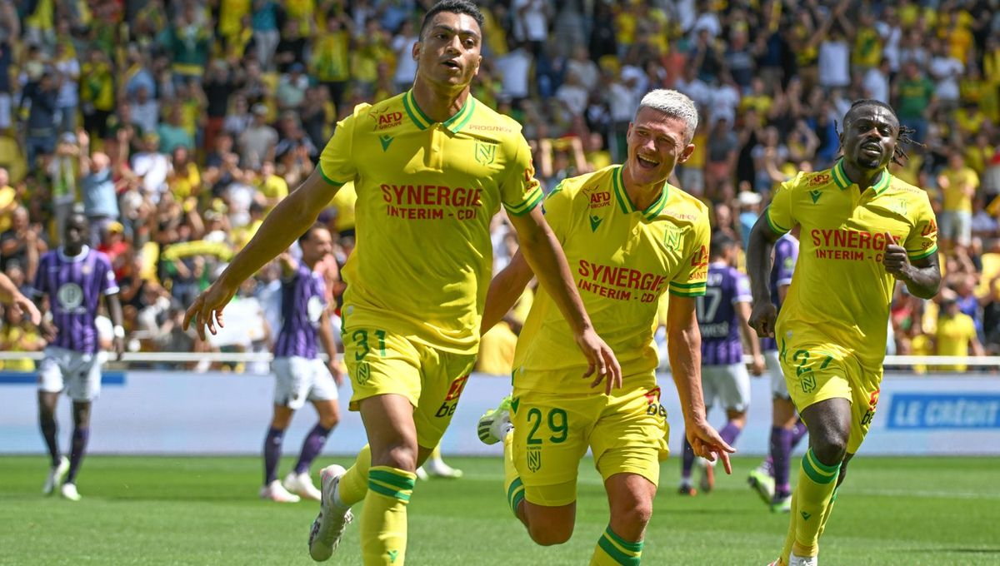
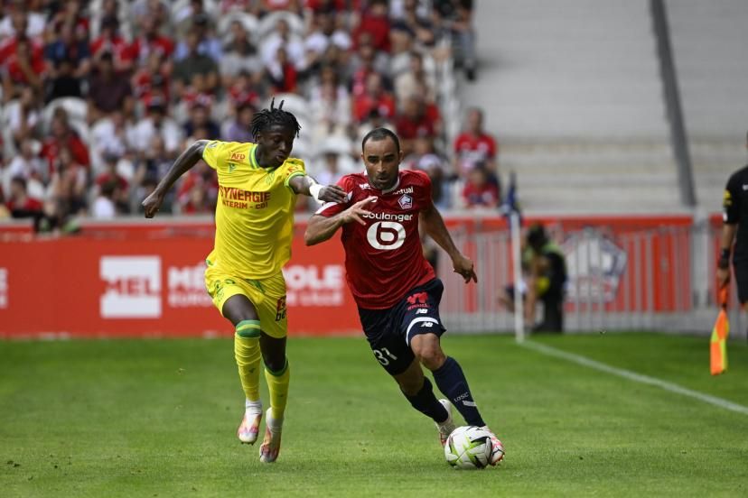
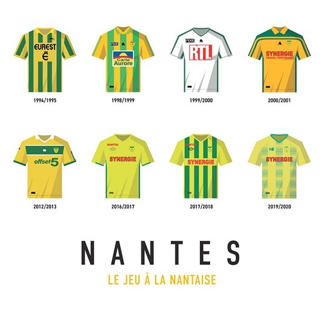
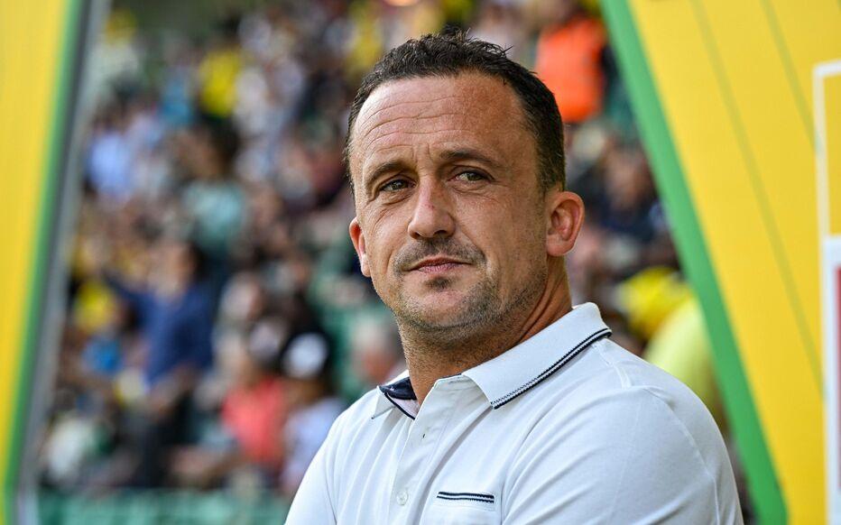
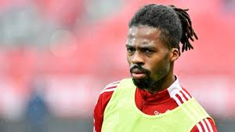
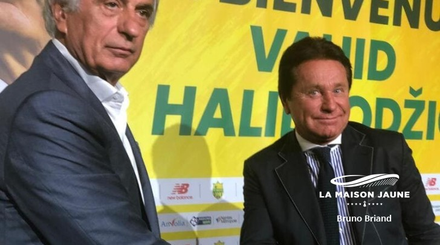
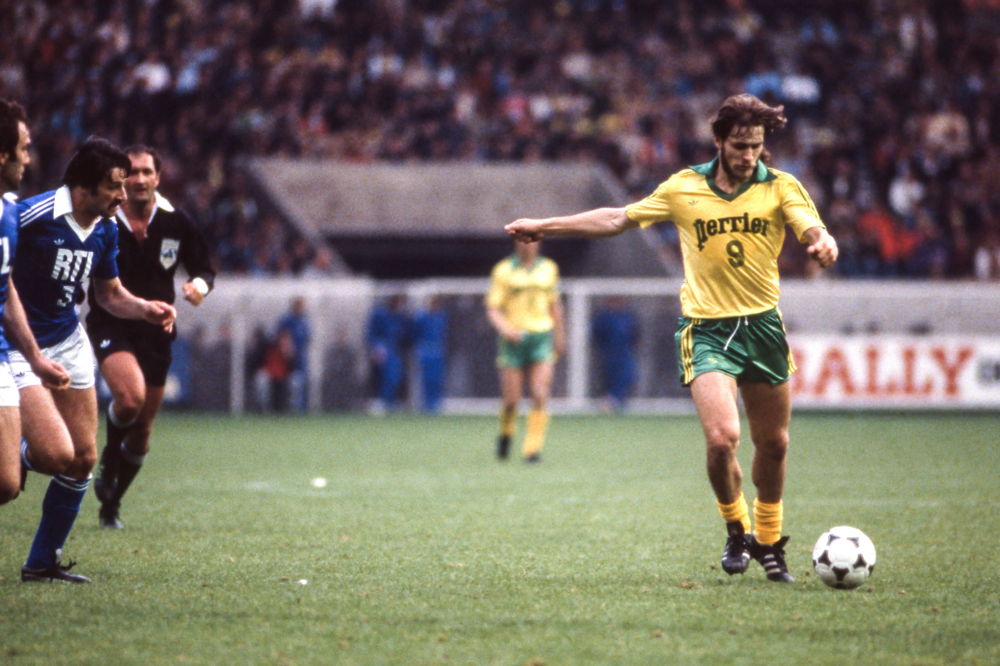
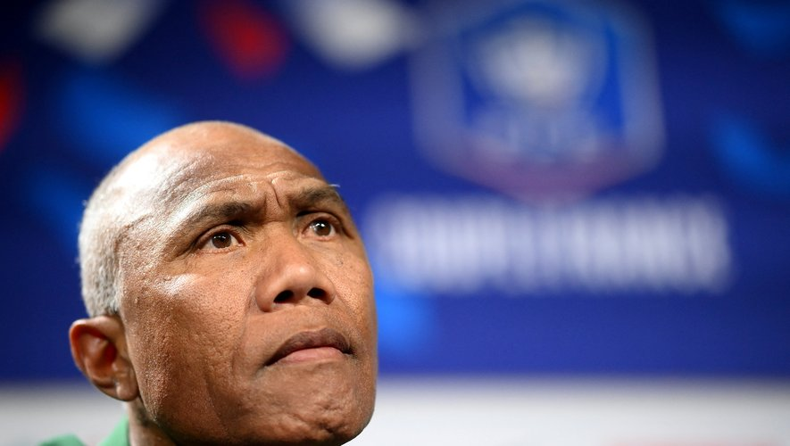

Actus
FC Nantes - Stade de Reims - Le groupe nantais
Pierre Aristouy a retenu un groupe de vingt joueurs à l'occasion de la réception du Stade de Reims, dimanche (15h) au Stade de La Beaujoire, pour le compte de la 11ème journée de Ligue 1 Uber Eats.
Près de 12 000 spectateurs à la Beaujoire pour la Youth-League
Pour le match aller du deuxième tour de Youth League, ce mercredi contre le HJK Helsinki (FIN), le FC Nantes a ouvert gratuitement la Beaujoire. Près de 12 000 places ont déjà été réservées.
Résumé : FC Nantes - FC Lorient
Revivez le match FC Nantes - FC Lorient
Les maillots du FC Nantes depuis le titre de 1995
Découvrez ou redécouvrez les maillots emblématiques du FCN, notamment celui de la saison 94/95, saison historique où Nantes frôlait la saison parfaite, ne comptabilisant qu'une seule défaite au compteur.
Classement
Prochain match
L'équipe


Interviews
Entretien. Pierre Aristouy, l'entraîneur du FC Nantes : "Ma priorité ? Le plaisir du jeu"
Après deux mois de compétition et huit matches de championnat, l’entraîneur des Canaris s’est prêté au jeu de l’entretien vérité. Ses premiers pas dans la peau d'un coach de Ligue 1, ses ambitions, sa philosophie de jeu, tout a été passé au crible…. À retrouver sur plus de 30 minutes d'entretien avec Anthony Brulez.
Ancien Canari. « Mon club de cœur, c’est le FC Nantes », assure Teddy Bouriaud

Sur la pente ascendante depuis son départ du FCN, l'ancien milieu canari est dans une situation délicate avec son club de Nancy. Trois ans après son départ du FC Nantes, Teddy Bouriaud poursuit son chemin en National. Après deux saisons au Puy Foot 43, relégué au printemps dernier, le natif de Saint-Herblain s’est engagé à l’AS Nancy Lorraine, un historique du football français qui bataille désormais pour son maintien en troisième division. Apparu dans dix des onze rencontres disputées par le club au chardon depuis son arrivée, il est déjà quasiment indiscutable.
Jean-Kévin Duverne : "La concurrence ne me fait pas peur"
Le style est décontracté. Dernier arrivé du mercato du FC Nantes, le défenseur Jean-Kevin Duverne a confié pour la première fois les raisons de son arrivée sur les bords de l'Erdre, ce vendredi, deux semaines après avoir signé un bail de quatre ans avec le FC Nantes. Après un long contrat à Brest, l'homme aux dreadlocks, aussi à l'aise dans une défense à trois qu'au poste de latéral gauche, a fait part de ses envies de s'imposer à un poste aujourd'hui occupé par Quentin Merlin.
Vahid Halilhodzic : "J’étais revenu au FC Nantes pour rester longtemps"
Vahid Halilhodzic a eu la gentillesse de nous accorder une interview pour retracer son parcours de joueur et d’entraîneur au FC Nantes. Dans ce second article, nous relatons son retour au club lors de la saison 2018-19. Ses propos permettent de mieux comprendre la courte durée de son passage au club.
Histoire

Le FC Nantes naît le 21 avril 1943 de la fusion de cinq clubs nantais, dont la Mellinet, présidée par Marcel Saupin. Jean Le Guillou, un premier dirigeant, propriétaire de chevaux de courses, transmet ses couleurs au club : le jaune et le vert. Devenu pro en 1945, propulsé en D1 l’année de ses 20 ans, Nantes devient une terre de pionniers, en terme de jeu collectif, avec José Arribas, puis ses fils spirituels Jean-Claude Suaudeau et Raynald Denoueix. Robert Budzynski, promu premier directeur sportif de l’Hexagone en 1969, fera venir des grands noms, comme Robert Gadocha, Vahid Halilhodzic, ou le champion du monde argentin Jorge Burruchaga. Sur le plan de la formation, le FC Nantes devient une référence dans les années 70, et inaugure La Jonelière en 1978. Le stade de La Beaujoire suivra 6 ans plus tard. Des équipements qui restent des références aujourd’hui.
Les entraîneurs
1943-46 : Aimé Nuic
1946-49 : Antoine Raab
1949-51 : Antoine Gorius
1951-55 : Emile Veinante
1955-56 : Antoine Raab
1956-59 Stanislas Staho puis Louis Dupal
1959-60 : Karel Michlowski
1960-76 : José Arribas
1976-82 : Jean Vincent
1982-88 : Jean-Claude Suaudeau
1988-91 : Miroslav Blazevic
1991-97 : Jean-Claude Suaudeau
1997-2001 : Raynald Denoueix
2001-03 : Angel Marcos
2003-déc.2004 : Loïc Amisse
Janv. 2005-06 : Serge Le Dizet
sept. 2006-fév. 2007 : Georges Eo
Fév. 2007 à sept. 2008 : Michel Der Zakarian (avec Japhet N’Doram les cinq premiers mois, puis Baptiste Gentili)
Sept. 2008 - Juin 2009 : Elie Baup
Juillet 2009 - Déc. 2009 : Gernot Rohr
Déc. 2009 - Fev. 2010 : Jean-Marc Furlan
Février 2010 - mars 2011 : Baptiste Gentili
Mars - Mai 2011 : Philippe Anziani
Juin 2011 - Mai 2012 : Landry Chauvin
2012 - 2016 : Michel Der Zakarian
Juin-Nov. 2016 : René Girard
Déc. 2016 - mai 2017 : Sergio Conceição
2017 - 2018 : Claudio Ranieri
Juin - sept. 2018 : Miguel Cardoso
Oct. 2018 - Juil. 2019 : Vahid Halilhodzic
Août 2019 - décembre 2020 : Christian Gourcuff
Décembre 2020 - février 2021 : Raymond Domenech
Février 2021 - mai 2023 : Antoine Kombouaré
Depuis mai 2023 : Pierre Aristouy.
Palmarès
8 titres de champion de France : 1965, 1966, 1973, 1977, 1980, 1983, 1995, 2001
7 fois vice-champion de France : 1967, 1974, 1978, 1979, 1981, 1985, 1986
4 victoires en Coupe de France : 1979, 1999, 2000, 2022
6 fois finaliste de la Coupe de France : 1966, 1970, 1973, 1983, 1993 et 2023
3 victoires au Trophée des Champions : 1965, 1999, 2001
3 victoires en Coupe Gambardella : 1974, 1975, 2002
1 finale de Coupe de la Ligue : 2004
2 fois vice-champion de deuxième division : 1963, 2008
Plus de 100 matches en Coupe d’Europe (C1, C2 et C3)
Ligue des Champions : demi-finaliste en 1996
Coupe des Vainqueurs de Coupe : demi-finaliste en 1980
Record national : 44 saisons consécutives en D1 de 1963 à 2007
Le premier coup d’éclat des Canaris date de 1963 avec la montée attendue depuis 20 ans en première division. Deux saisons plus tard, à la surprise générale, le FC Nantes décroche son premier titre de champion de France avec à sa tête le buteur Jacky Simon, Robert Budzynski et Bernard Blanchet. En 1966, les Jaunes conservent leur titre avec sept points d’avance sur Bordeaux, grâce à un buteur d’exception : Philippe Gondet (36 buts). Le règne de Saint-Etienne commence, mais Nantes reprend le titre en 1973, et échoue une deuxième fois pour le doublé. C’est en 1979, face à Auxerre, et grâce à un triplé d’Eric Pécout, que le FCN remporte sa première Coupe de France. Auparavant, les joueurs dirigés par Jean Vincent avaient remporté le titre en 1977, et avaient même récidivé en 1980. Jean-Claude Suaudeau remportera deux titres en tant qu’entraîneur, en 1983 –l’époque des grands noms Bossis, Halilhodzic et Touré- puis en 1995, grâce à une jeune équipe au talent fou. A la tête de la génération Landreau, Raynald Denoueix l’imitera en 2001, après avoir remporté deux Coupe de France.
Les grands noms
Ils sont quatre Nantais à disputer la Coupe du Monde 1966 en Angleterre (Robert Budzynski, Jacky Simon, Philippe Gondet et Gaby de Michèle). Ils auraient même pu être six, si le gardien Daniel Eon ne s’était pas blessé gravement lors de la journée de championnat, et si Bernard Blanchet n’avait pas été désigne comme 23e homme lors du dernier stage avant la compétition. Autre symbole de la domination nantaise à l’époque, José Arribas occupera un temps le poste de sélectionneur de l’Equipe de France aux côtés du Stéphanois Jean Snella. Des joueurs comme Claude Robin, Gilbert Le Chenadec et, plus tard, Gilles Rampillon, auraient sans doute mérité plus de sélections. Autre période faste pour les Canaris en sélection, la fin des années 70 voit à plusieurs reprises la présence de cinq ou six Nantais sous le maillot bleu. A l’époque, Henri Michel, Patrice Rio, Jean-Paul Bertrand-Demanes et Maxime Bossis sont sélectionnés pour le Mondial 1978 en Argentine, mais Loïc Amisse, Omar Sahnoun et Bruno Baronchelli ont aussi les faveurs de Michel Hidalgo. William Ayache et José Touré prendront leur relais dans les années 80, puis le trio Patrice Loko-Raynald Pedros-Nicolas Ouédec, dans les années 90. Figures de la formation à la nantaise qu’ils prennent soin de défendre à la moindre occasion, Didier Deschamps, Marcel Desailly et Christian Karembeu resteront pour l’éternité les trois Canaris champions du Monde 1998. Ancien Nantais lui aussi, Claude Makelele prendra la suite chez les Bleus, dans le coeur des supporters nantais. En 2006, lors de la Coupe du Monde en Allemagne, Mickaël Landreau, gardien emblématique des Jaunes depuis ses débuts fracassant à 17 ans, puis Jérémy Toulalan, à l’occasion de l’Euro 2008, perpétuent la longue tradition des joueurs formés au FC Nantes en Equipe de France. Une pensée enfin pour les grands joueurs étrangers qui ont porté le maillot jaune. On pense au duo argentin champion du monde Burruchaga-Olarticoechea, à leurs compatriotes Angel Marcos ou Nestor Fabbri, ou encore à un premier buteur venu des pays de l’Est, Vahid Halilhodzic, avant un certain Viorel Moldovan.